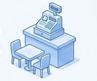
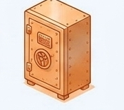
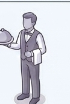

מדריך הבנייה ל-Vibe Coding
איך להפוך רעיון לאפליקציה פנים-ארגונית עובדת – בלי לדעת לכתוב שורת קוד אחת.
האנטומיה של אפליקציה: מסעדת הנתונים
כדי לבקש מקלוד לבנות אפליקציה, צריך לדעת להסביר לו אילו חלקים אנחנו צריכים. כל מערכת דיגיטלית מתחלקת לשלושה אזורים – בדיוק כמו מסעדה.

חדר האוכל
Frontendמה שהלקוח רואה ונוגע בו – החוויה והממשק.

המטבח והכספת
Backendהעיבוד, האבטחה ושמירת המידע מאחורי הקלעים.

המלצר
APIמעביר בקשות בין האזורים ואל מסעדות אחרות.
חדר האוכל (Frontend)
מרחב החוויה והממשק. כל מה שהמשתמש רואה ולוחץ עליו – כפתורים, גרפים, תפריטים.
כמו קופאי שבודק אם חסר כסף לפני שהוא שולח את ההזמנה – הפרונטנד בודק תקינות בסיסית (למשל, האם הוקלד שטרודל בכתובת המייל) כדי לחסוך זמן.
דשבורד מרהיב המציג נתוני צפייה ברשת, הכולל כפתורי סינון לפי תאריך וסוגה.
המטבח והכספת (Backend)
מרכז העיבוד, האבטחה והנתונים. אזור סמוי מן העין המבצע לוגיקה עסקית כבדה.
ללא הבקאנד (המזווה והכספת), כל פעולה שהייתם עושים הייתה נמחקת ברגע שסוגרים את הדפדפן.
המערכת שמחשבת חריגות תקציב ומוודאת שלמשתמש יש סיווג מתאים לצפות בהן.
המלצר האישי (API)
שרשרת האספקה הדיגיטלית. אתם לא צועקים למטבח – המלצר (API) מעביר בקשה מובנית ומחזיר תשובה.
צריכים מפה? שלחו את ה-API למטבח של Google Maps במקום להמציא את הגלגל מחדש.
בחירת המנוע החכם: משפחת Claude
מודל אחד לא מתאים לכל משימה. תתאימו את "כוח הסוס" למשימה שלפניכם.

קל, זול ומהיר מאוד.
משימות פשוטות, תרגום טקסטים קצרים וקריאה מהירה של יומני צ'אטבוט שיווקי.

המודל האופטימלי והמאוזן ביותר.
כתיבת קוד, פיתוח אפליקציות אינטראקטיביות וניתוח נתונים מסועפים.

החכם, היקר והאיטי ביותר.
תכנון ארכיטקטוני עמוק ופתרון באגים מורכבים שהמודלים הקטנים לא הצליחו לפצח.
היררכיית הנגשת הידע: איך קלוד לומד עלינו?
העתק-הדבק
פתרון מהיר ונקודתי (תרגום אימייל), אך ללא זיכרון ארוך טווח.
Projects & Artifacts
סביבת עבודה ייעודית: מעלים מסמכי מדיניות, והמודל שולף מידע בעת הצורך. הארטיפקט משמש כמסמך חי.
חיבור חי וישיר
שימוש בקונקטורים (Connectors): המודל ניגש אוטונומית למערכות (למשל Salesforce) ושולף נתונים עדכניים ללא התערבות ידנית.
פרוטוקול MCP: מתאם ה-USB-C של עולם ה-AI
כדי לחבר בינה מלאכותית למערכת תקציב או מייל, היה צורך לכתוב קוד "מתורגמן" נפרד ומסובך לכל תוכנה.
שקע אוניברסלי. ה-IT מגדיר פעם אחת, אתם מבקשים מקלוד למשוך נתונים – והוא מתחבר ישירות ובשקיפות.
משאבים
נתונים לקריאה
כלים
פעולות לביצוע
תבניות
שאילתות מוכנות
מארגז החול לסביבת ייצור: מסוע ה-CI/CD
הדרך שבה קוד עובר בבטחה מהניסוי הפרטי שלכם אל כלל העובדים.
סביבה לוקאלית
ארגז החול הפרטי שלכם. תקלות פה לא משפיעות על אף אחד.
מסנן ה-CI
אינטגרציה רציפה: הקוד עובר מבחני מנוע אוטומטיים. אם משהו שבור – המסוע עוצר ומחזיר התראה.
סביבת ייצור (CD)
מסירה רציפה: המערכת אורזת את האפליקציה בשרתי החברה ומנפיקה כתובת URL מאובטחת לכלל העובדים.
האנטומיה של פרויקט Vibe Coding מוצלח
הבינה המלאכותית לא רק כותבת קוד – היא מנהלת עבורכם את כל המסעדה.
החוויה
חושבים על הפרונטנד
הלוגיקה
כותב את הבקאנד
הנתונים
שאיבה אוטונומית
הפצה
secure.vibe-app.com
אתם חושבים על החוויה, קלוד כותב את הלוגיקה במנוע ה-Sonnet, שואב נתונים אוטונומית דרך MCP, והכל מוגן ומופץ אוטומטית לעובדים דרך מסוע ה-CI/CD.
ספר המהלכים: מתיאוריה לעבודה מעשית
כוכב צפון (North Star)
הגדירו יעד מדיד: דשבורד המציג 5 חריגות לחודש.
אפיון ממוקד (PRD-Lite)
מסמך קצר עם 3 פעולות ליבה – הפרידו מהתוספות המיותרות.
פינג-פונג (איטרציות)
העירו לקלוד בשפה טבעית: "הזז ימינה", "הוסף פילטר".
ייצוב והפצה
הסתרת סיסמאות ועלייה מסודרת לייצור דרך CI/CD.
גלגל הדיבאגינג הפסיכולוגי
אל תנסו להבין את השגיאה; תנו ל-AI להבין אותה.
הכוח לפתח נמצא עכשיו בידיים שלכם
ארגונים שמצליחים להעביר את הפיתוח לעובדי הקצה זוכים במערכות המדויקות ביותר.
סביבת Claude Enterprise שלנו בטוחה ושקופה (Audit Logs). אל תכניסו סיסמאות לקוד, והשתמשו במערכת לצרכים עסקיים בלבד.
אל תפחדו לנסות ואל תפחדו משגיאות. אתם כבר לא רק צרכנים של תוכנה – היום אתם הופכים לבילדרים.
קשת · פרויקט ה-Vibe Coding הארגוני · הכלים שלנו: Claude Code ו-Cowork